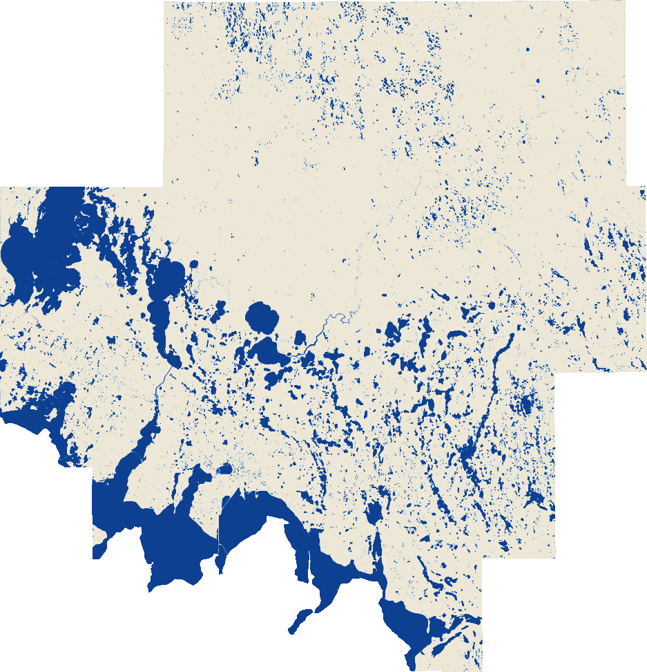

Planting Season Water Persistence layer
Standing water.
Standing water.
Seen over time.
Follow the water through the planting season. Explore satellite-derived maps at 3-metre resolution, across Prairie Pothole counties in North and South Dakota.

How it’s made
Many days, stacked into one map
- Daily satellite imagesMar 15 – Jun 30, the full planting window.
- Water checked each dayEvery 3 m pixel is labelled water or dry.
- Days combinedEach pixel keeps its share of usable days under water.
- One percentage layer0–100% per pixel — view it at 70, 80 or 90% on the download map.
What’s new
All updates
Latest data updates
Need an account?
Accounts are issued to insurance-company and .gov email addresses after review by the UIUC team.